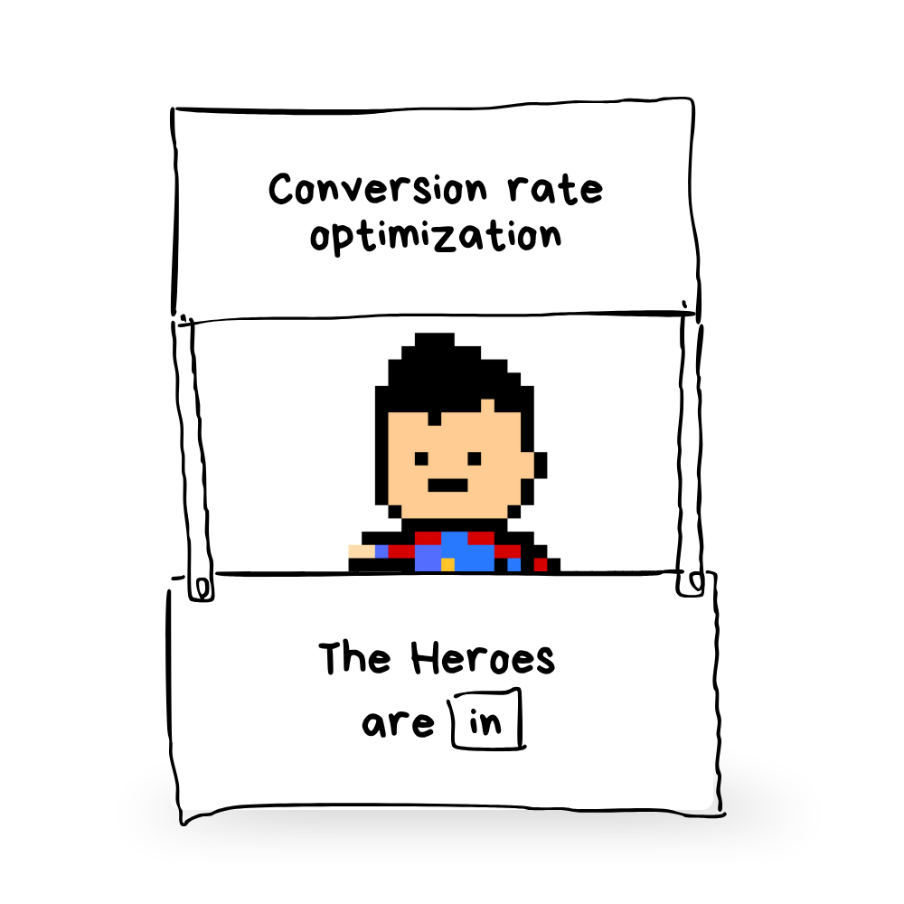

CRO is a test
Not like an A/B test. It’s more like the tests we used to take in school that gets graded. Only it’s the market that does the grading.
And the grade our website gets directly correlates to revenue. It doesn’t matter what our classmates or teachers think… they are not the ones paying your tuition. The only thing that matters is how our customers respond.
My background is in ecommerce marketing and qualitative research, so the lens in which I view CRO is a little different. I am much more concerned with the customer’s psychology, perspective, and intent rather than copy-pasting tactics. Because the customer journey starts long before they land on a pixel-perfect page.
And those customers are grading your site based on their own terms.
CRO & marketing is an intersection of many skills. It’s a lot of halves. Half research & analytics, half copywriting, half design, and a healthy scoop of psychology. A lot of halves make for a whole lot of whole… which is why it is so confusing yet so fun at the same time.
I started writing The Real Heroes of Ecommerce years ago as a way to talk about ecommerce from this perspective, and to explore ideas on better ways to understand our customers — because they are the real heroes. But it has evolved quite a bit. I now work with and train many growing brands to improve their CRO programs. I still write, but not as much. And we recently launched a Shopify app designed for CROs to use in their analytics suite.
But through all of that, and through the conversation around AI and agentic commerce, and through all the new technology, new ways to market, and new avenues for distribution… one thing remains the same. One thing that will never change as long as transaction is a word.
Business will always be you on one side and your customer on the other.
And everything in the middle will pan out if you focus on those two things.
- Sign up for The Real Heroes of Ecommerce.
- Install Snapshot on your Shopify store.
- Hit me up if you want to talk about CRO.
Cheers,
—Shep